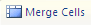

|
Faceţi clic unde doriţi să inseraţi un tabel Pe fila Inserare (Insert), în grupul Tabele (Tables), faceşi clic pe Tabel (Table),alegeţi Tabele rapide (Quick Tables) apoi faceţi clic pe şablonul dorit. Faceţi clic unde doriţi să inseraţi un tabel Pe fila Inserare (Insert), în grupul Tabele (Tables), faceşi clic pe Tabel (Table),alegeţi Inserare tabel (Insert Tables) apoi in eticheta deschisă introduceţi numărul de coloane (columns) şi numărul de linii (rows) dorit |
Selectaţi celulele pe care doriţi să le imbinaţi
Pe fila Aspect (Layout) din grupul de Instrumente Tabel daţi clic pe Îmbinare celule
(Merge cells). 
Selectaţi celula sau celulele pe care doriţi să le scindaţi (divizaţi)
Pe fila Aspect (Layout) din grupul de Instrumente Tabel daţi clic pe Scindare celule
(Split cells).
Instrumentele Tabel se găsesc pe fila Aspect (Layout):

Pe fila Inserare (Insert) din grupul Simboluri se alege
simbolul dorit.
se alege
simbolul dorit.
Pe fila Inserare (Insert) în grupul Ecuaţiii se editează
ecuaţia (formula) dorită folosind simbolurile cuprinse în grupul Ecuaţii:
se editează
ecuaţia (formula) dorită folosind simbolurile cuprinse în grupul Ecuaţii:

|
Selectaţi textul pe care vreţi să-l convertiţi în WordArt |
 şi alegeţi grafica
şi alegeţi grafica  |
Faceţi clic în locaţia unde doriţi să inseraţi miniatura |
Faceţi clic în locaţia unde doriţi să inseraţi miniatura
În fila Inserare (Insert) în grupul Ilustratii (Ilustrations) faceţi clic pe Imagine
(Picture) şi în fereastra care apare selectaţi o imgine şi apăsaţi butonul Inserare (Insert).
- ⇨ Lansaţi procesorul de text Microsoft Word
- ⇨ Pentru margini alegeţi formatarea predefinită Wide din listă
- ⇨ Scrieţi titlul ORAR cu font CASTELLAR, mărime 18, culoare red, subliniat, centrat
- ⇨ Inseraţi un tabel de 6 coloane şi 7 rânduri în care scrieţi orarul clasei voastre
- ⇨ În căsuţa fiecărei zile din săptămâmă insertaţi câte o miniatură
- ⇨ Sub tabel scrieţi folmula de calcul a rădăcinilor ecuaţiei de gradul doi
- ⇨ Sub ecuaţie scrieşi textul: PROGRAM DE VACANŢĂ
- ⇨ Convertiţi acest text in WordArt
- ⇨ Sub acest text inseraţi o imagine de vacanţă
- ⇨ Salvaţi acest fişier cu numele "Şcoala si vacanţa" .